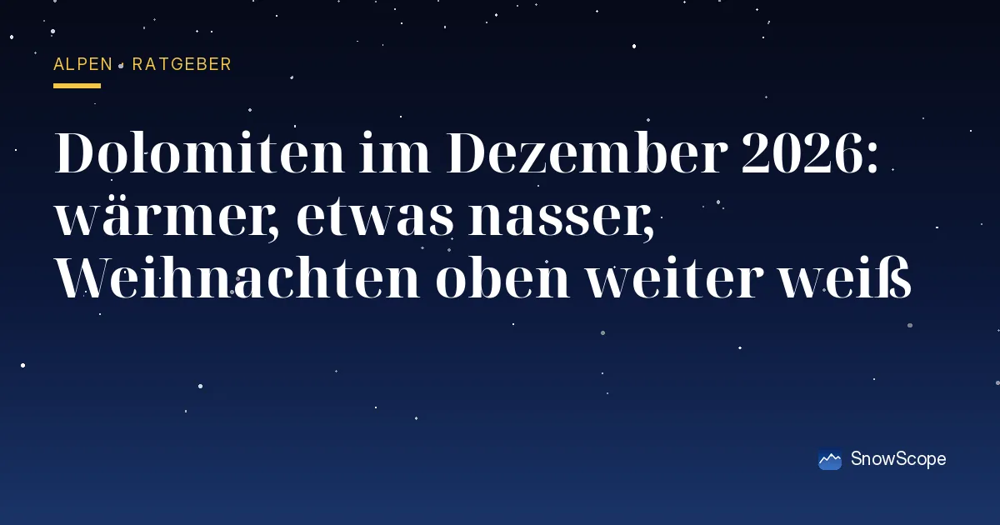

Dolomiten im Dezember 2026: wärmer, etwas nasser, Weihnachten oben weiter weiß
Der Dezember in den Dolomiten wird wärmer und etwas feuchter als in vergangenen Wintern. Die SnowScope-Karte zeigt über weiten Teilen des Gebirges kein klares Signal, 42 % deuten auf weniger Schnee hin, doch Weihnachten bleibt in der Mittelhöhe sehr wahrscheinlich weiß.
Die Live-Schneeprognose für Dolomites in der SnowScope-AppSchneehöhen, Pulverschnee-Alarme und 3D-Karte, gratis.

Die Schneekarte erzählt eine gemischte Geschichte
Wenn wir die Dolomiten Tal für Tal mit ihren eigenen vergangenen Dezembern vergleichen, ist das Bild unsicher. Über das ganze Gebirge zeigen 58 % kein klares Signal in die eine oder andere Richtung. Die restlichen 42 % deuten auf weniger Schnee hin, vor allem in den nördlichen Pusterbädern und südöstlich um das Cadore. Kein Teil des Gebirges zeigt eine Neigung zu mehr Schnee.
Die Chancen auf überdurchschnittliche Neuschneemengen im Dezember bleiben bescheiden: zwischen 34 % und 46 %, mit einem Mittelwert von 41 %. Mit anderen Worten: mehr Neuschnee als üblich ist möglich, aber nicht das wahrscheinlichste Szenario.
Was macht Dezember wärmer
Einundfünfzig Saisonvorhersagen des Europäischen Wetterzentrums stimmen darin überein, dass der Dezember etwa 1,7 °C wärmer sein wird als das Klimamittel vergangener Winter. Niederschlag liegt 12 % über dem üblichen Dezember-Total von 70 mm, aber die Ensemble ist sich uneinig: 53 % der Läufe sind feuchter.
In den Dolomiten fällt viel Schnee, wenn Stürme von Süden hereinziehen. Wenn der Monat wärmer läuft, steigt die Schneefallgrenze höher, und Niederschlag, der in tieferen Lagen Schnee gewesen wäre, fällt als Regen. Mittelhöhen und hohe Lagen bekommen mehr vom Schnee ab, während Täler zunehmend auf Kunstschnee angewiesen sind.


Neuschnee-Vorhersage und Dezember-Höhe
Über die wichtigsten Skigebiete—Val Gardena, Alta Badia, Cortina d'Ampezzo, Val di Fassa und Seiser Alm—bringt ein typischer Dezember 24 cm Neuschnee in der Mittelhöhe. Diese Vorhersage rechnet mit 21 cm. Bis 31. Dezember beträgt die übliche Höhe 33 cm; die Aussicht ist 30 cm. Das sind normale Werte, innerhalb der natürlichen Schwankungen von Jahr zu Jahr.
Die Chance, den Monat mit mehr Schnee als üblich zu beenden, liegt bei 41 %. Das heißt, während magere Ergebnisse möglich sind, deutet die Vorhersage nicht auf einen besonders schneearmen Dezember hin. Vieles wird davon abhängen, wann Stürme kommen und wie kräftig sie sind.
Schnee zu Weihnachten in Val Gardena
Val Gardena in der Mittelhöhe (1.882 m) hatte in 42 der letzten 45 Winter mindestens 5 cm Schnee zu Weihnachten—eine Wahrscheinlichkeit von 93 %. Diese Vorhersage behält das bei: 91 % des Saisonensembles bringen Weihnachtsschnee. Die erwartete Höhe am 25. Dezember liegt bei 25 cm, etwas weniger als die üblichen 27 cm, aber immer noch gut fahrbar.
Höhere Hänge in den Dolomiten sind zu Weihnachten noch zuverlässiger weiß. Talstationen in einem warmen Dezember sind die unsicheren Zonen; sie hängen normalerweise von Präparation und Kunstschnee ab.
Wie sich dieser Dezember mit vergangenen Wintern vergleicht
Die vergangenen Dezember mit Vorhersagemustern, die dieser Aussicht am ähnlichsten sind, sind 2014, 2023 und 2013. Keiner davon war besonders schneereich oder schneearm; das waren gewöhnliche Monate mit mittleren Schneemengen und -höhen. Das setzt den Ton: Erwartet einen Dezember in der Mitte des typischen Bereichs.
Ein Vorbehalt zählt: Ein einzelnes Sturmsystem von Süden kann die Monatsgesamtheit um 10 cm oder mehr verändern. Die 7-Tage-Vorhersage ist dein bester Ratgeber, wenn ein System droht; achte auf Zeitpunkt und Zugbahn genau.
Tipps für Skifahrer
- Plane Dezember-Tage Anfang des Monats auf höheren Liften und Graten, wo der Schnee zuverlässiger ist als in den Tälern.
- Schau wöchentlich in die 7-Tage-Vorhersage auf Sturmsysteme, die von Süden kommen und den Dolomiten bedeutende Schneemengen bringen können.
- Vergleiche die SnowScope-Karte über verschiedene Täler: Die Schneefallgrenze kann sich in einem Wärmespell zwischen Pustertal und Val di Fassa um mehrere hundert Meter verschieben.
- Wenn du Weihnachtspläne hast, buche Mittelhöhen- und Hochgebirgsterrain mit Zuversicht; Talabfahrten werden abhängiger von Präparation sein.
- Packe Schichten zum Wärmen tagsüber ein, aber rechne mit wechselhaften Bedingungen; eine Anomalie von 1,7 °C bedeutet, dass manche Pisten in der Früh Regenkruste tragen können, bevor sie hart werden.
Zu diesen Zahlen
Die Schneehöhen der Skigebiete sind der meiste Schnee in den oberen Hängen am angegebenen Tag; es sind Schätzungen für eine Fläche, keine Messung an einem Punkt. Prognosen können sich ändern. Lies vor dem Freeriden immer den offiziellen Lawinenlagebericht.
Diesen Bericht zitieren
Für Forschung, Lehre oder Presse: Zahlen und Grafiken sind unter CC BY 4.0 mit dieser Quellenangabe frei nutzbar.
SnowScope (2026), Dolomiten im Dezember 2026: wärmer, etwas nasser, Weihnachten oben weiter weiß, https://snowscope.app/blog/de/2026/11/dolomites-december-2026-snow-outlook.html, abgerufen am 2026-11-10
SnowScope (Atlas Labs). (2026, November 10). Dolomiten im Dezember 2026: wärmer, etwas nasser, Weihnachten oben weiter weiß. SnowScope snow reports. https://snowscope.app/blog/de/2026/11/dolomites-december-2026-snow-outlook.html
BibTeX
@misc{snowscope2026dolomitesdecember2026sno,
author = {{SnowScope (Atlas Labs)}},
title = {Dolomiten im Dezember 2026: wärmer, etwas nasser, Weihnachten oben weiter weiß},
year = {2026},
month = nov,
howpublished = {\url{https://snowscope.app/blog/de/2026/11/dolomites-december-2026-snow-outlook.html}},
note = {Published 2026-11-10 12:17 UTC; accessed 2026-11-10}
}· CC BY 4.0 · Methoden, Daten und Werkzeuge →
Dolomites folgen
Gratis: eine Nachricht, wenn Neuschnee kommt, und jeden Morgen die Vorhersage.
Weitere Schneeberichte

Wann Courchevel und die 3 Vallées buchen, welches Dorf wählen und wo der Schnee hält, geplant aus 46 vergangenen Wintern.

Cortina d'Ampezzo auf drei Arten: Tofana, Faloria-Cristallo und Cinque Torri-Lagazuoi, mit 46 Wintern Schneedaten auf drei Höhen.

Bonneval-sur-Arc liegt auf 1.794 m im hohen Arc-Tal, im Winter durch den Iseran abgeschnitten. Die Schneehöhe reicht von 99 cm in der Talstation bis 335 cm am Berg. Daten aus 46 vergangenen Wintern, November 2026.